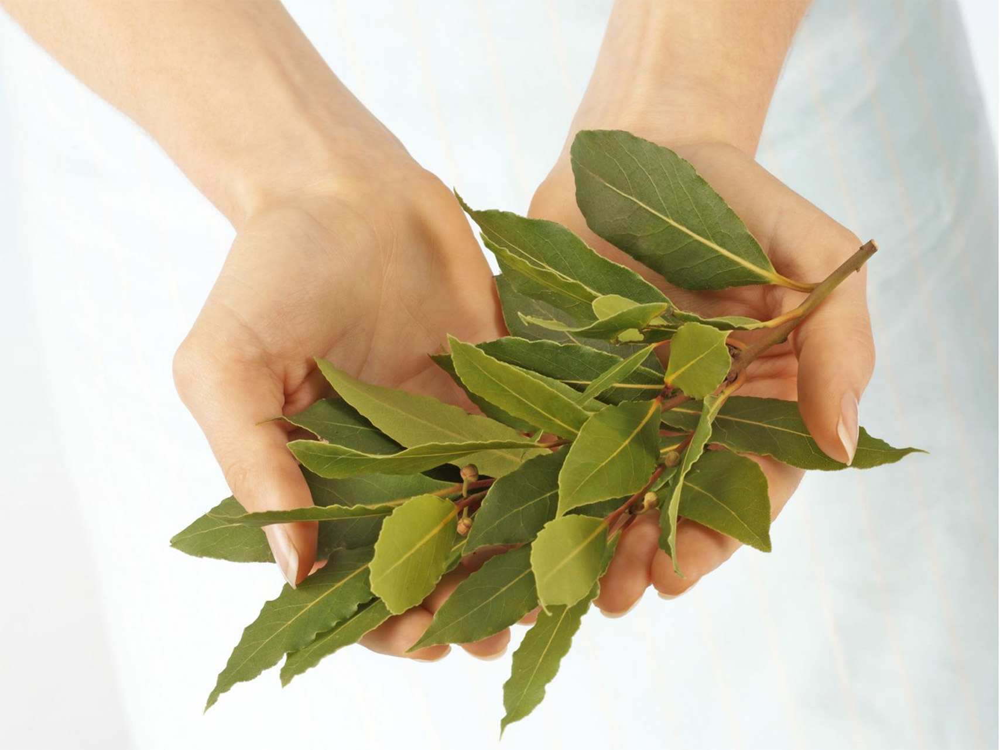
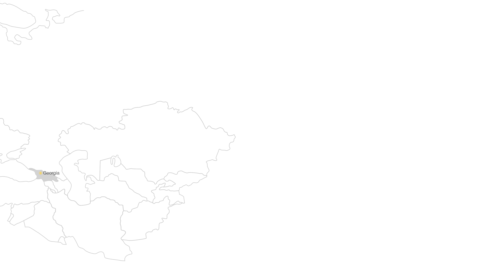

После збора лавровый лист помещается в камеру и на протяжении 48 часов происходит его сушка при температуре
выше 50° С, что позволяет максимально сохранить эфирные масла (что придает приятный аромат) яркий зеленый
цвет (который сохраняется
на протяжении долгого времени).
Влажность лаврового листа после сушки 7-9%.
1
Лавровый лист машинной сушки не перебранный
(аналог турецкого semi selected)
Перед фасовкой в тюки лавровый лист проходит инспекцию, где отбираются больные листья, веточки, соцветия.
50° C
Температура
48 ч
Сушка
2
Лавровый лист машинной сушки перебранный крупный <12 см
(аналог турецкого hand selected)
Перед фасовкой в тюки лавровый лист проходит инспекцию, где отбираются больные листья, веточки, соцветия.
Также с помощью барабана происходит отсеивание мелкого и ломаного листа.
50° C
Температура
48 ч
Сушка
<12 см
Размер
3
Лавровый лист машинной сушки перебранный <8 см
(аналог турецкого hand selected)
Применяется для автоматической сортировки на станках
Перед фасовкой в тюки лавровый лист проходит инспекцию, где отбираются больные листья, веточки, соцветия.
Также с помощью барабана происходит отсеивание мелкого и ломаного листа нужной фракции (3-8 см).
50° C
Температура
48 ч
Сушка
<8 см
Размер
4
Дробленный лавровый лист
Фракция от 1 до 10 мм
Упаковка
Лавровый лист может быть упакован в картонные ящики или полипропиленовые мешки
весом 10-20 кг, по желанию покупателя.
Фасовка в полипропиленовые мешки по 15 кг.
Фасовка в картонные ящики по 15 кг
Фасовка в полипропиленовые мешки по 15 кг
Дистрибьюция
Мы сегодня активно развиваемся и расширяем нашу дистрибьюторскую сеть.
Мы приглашаем Вас к сотрудничеству.
Наши принципы взаимодействия просты и прозрачны.
Мы предоставляем собой компанию с семейным типом культуры,
поэтому хорошие стабильные отношения с нашими партнерами - большая ценность для нас.
Мы сделаем все, чтобы наша совместная работа была
приятна и выгодна для обеих сторон.
Ждем Вас!
Мы готовы рассмотреть любые ваши пожелания к качеству и предложить очень конкурентные цены!
О нас

Наша компания "LeafLux" Ltd предлагает высококачественный лавровый лист с 2000 года,
выращеный в экологических чистых горных районах Грузии.
При выращивании лавра не применяется никаких химических средств. В результате лист имеет превосходный насыщенный аромат.
Мы уверены в самом лучшем качестве нашего продукта, что подтверждает сертификат.

Сделанные нами инвестиции в производство позволяют осуществлять:
качественную сушку в высокопроизводительных сушильных камерах;
автоматическую калибровку и сортировку лаврового листа;
качественную упаковку.
Преимущества
Лавр выращенный в экологически чистых горных районах Грузии. Без применения химических средств.
Качество нашего продукта, подтверждает наличие сертификата.
Быстрая доставка товара в любую точку мира.
Все процессы осуществляются на уровне самых современных технологий.